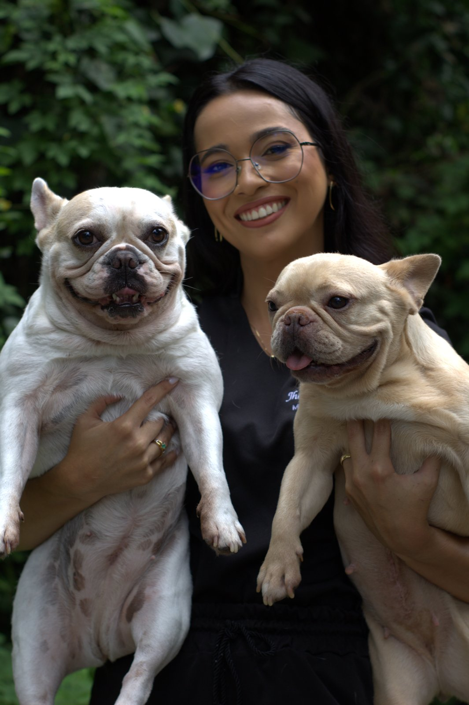
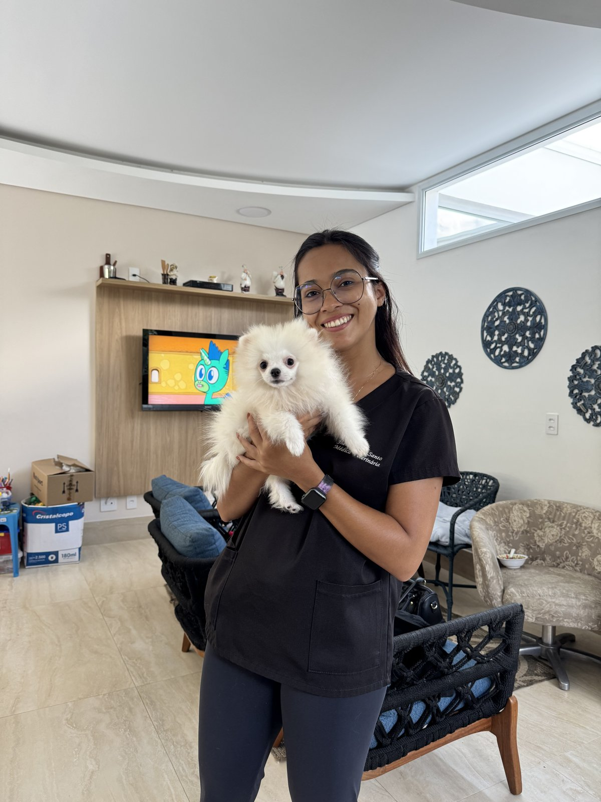
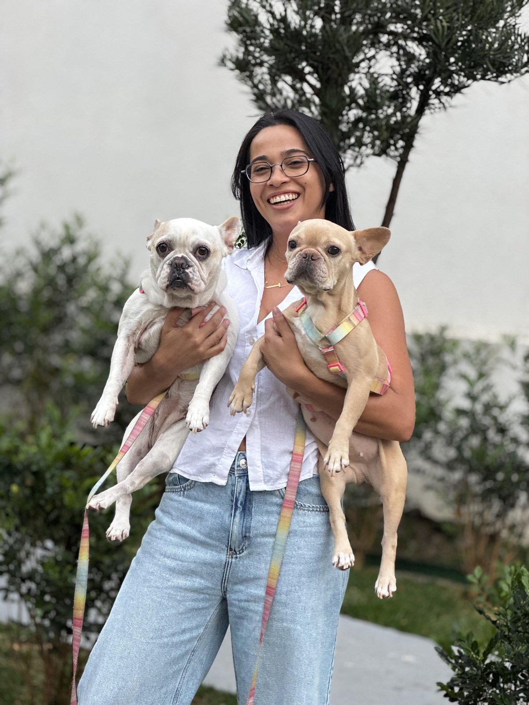
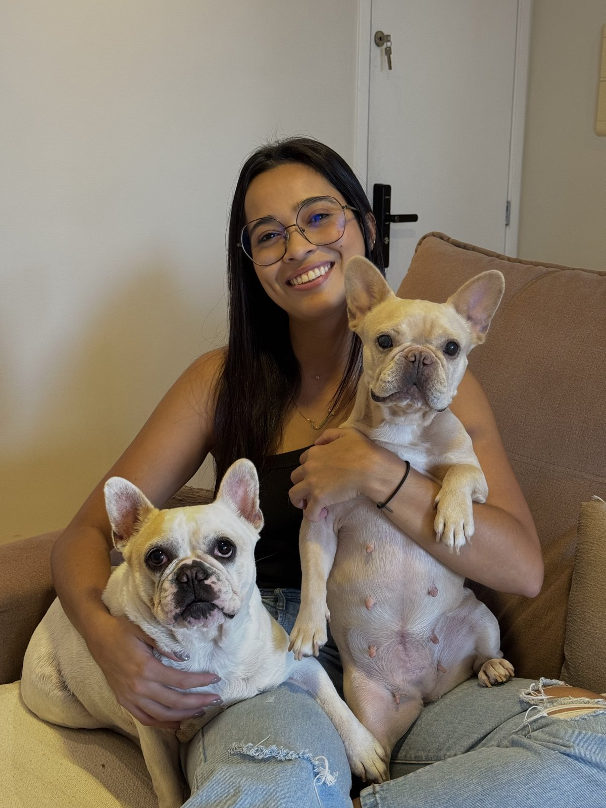
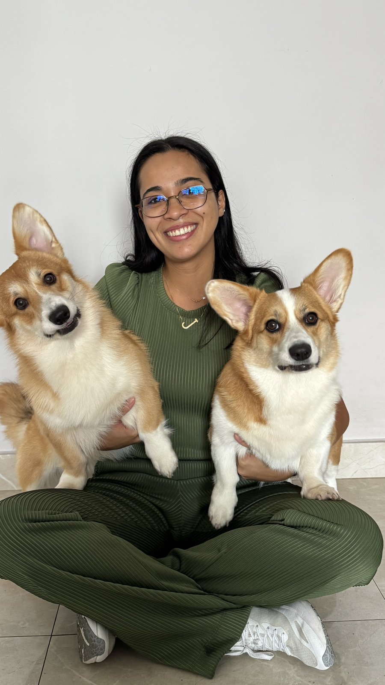
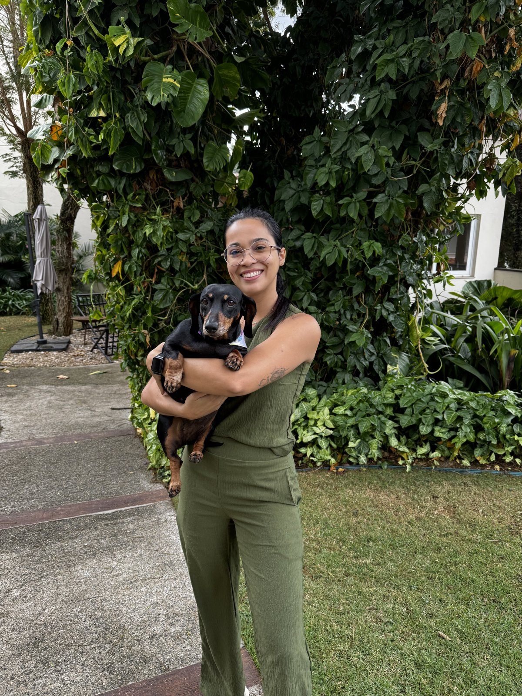
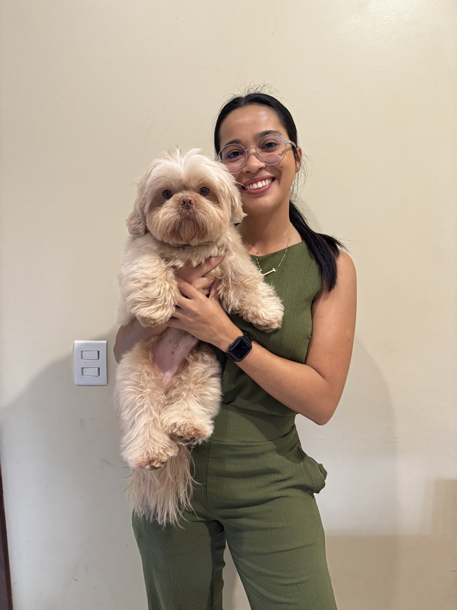
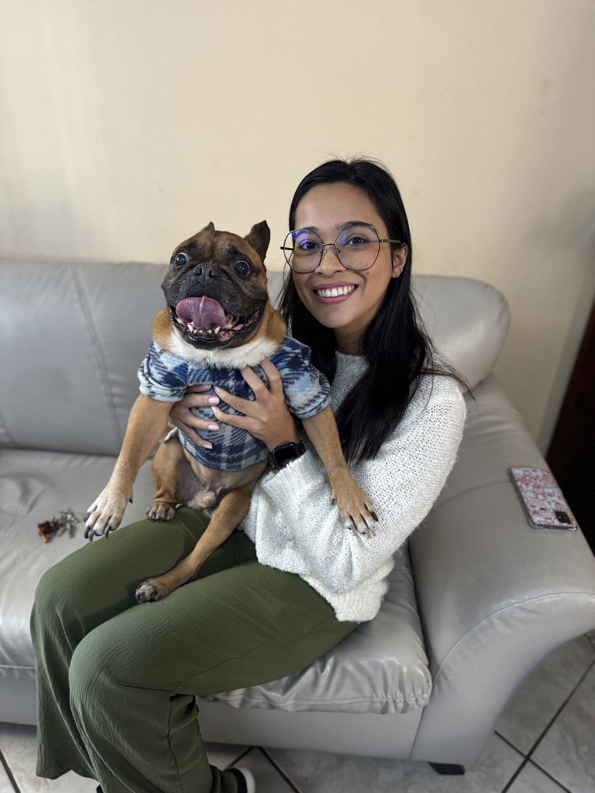

Uma veterinária que decidiu falar a língua de quem cuida.
Jhennifer é médica-veterinária com especialização em Medicina Veterinária Integrativa — uma abordagem que une o rigor da medicina convencional a práticas naturais e holísticas, sempre que isso beneficia o paciente.

Da faculdade ao consultório.
A base é a medicina veterinária tradicional — depois vieram a especialização em Medicina Veterinária Integrativa e a experiência prática de consultório, atendendo tutores e pacientes lado a lado, todos os dias.
É dessa prática diária, e não de teoria isolada, que nasce boa parte do conteúdo que ela produz: casos reais, dúvidas reais, decisões clínicas reais traduzidas para quem não é da área.
Uma prova viva em casa.
Seus dois bulldogs franceses aparecem constantemente no conteúdo — não como mascotes, mas como prova viva do que ela ensina. Essa proximidade é o que fez o @medicadopet crescer para 128 mil pessoas: a audiência sente que ela "fala de igual para igual".
O resultado é um perfil raro — autoridade técnica com empatia de tutora — capaz de gerar tanto compartilhamento altruísta em emergências quanto conexão de compra no dia a dia.
Três frentes guiam o que ela comunica.
Urgência & emergência
Conteúdo de utilidade pública que ajuda um tutor a reconhecer um risco a tempo — e a saber o que fazer nos primeiros minutos.
Controvérsia educativa
Temas que dividem opinião no universo pet, discutidos com base técnica — para gerar debate consciente, não medo.
Democratização da saúde
Mostrar que cuidado de qualidade não depende de produtos caros — só de informação certa, no momento certo.
Do consultório ao estúdio de conteúdo.



Pacientes reais, de todas as raças.
Os bulldogs franceses são dela — mas o consultório recebe cães e gatos de todos os portes e idades.



